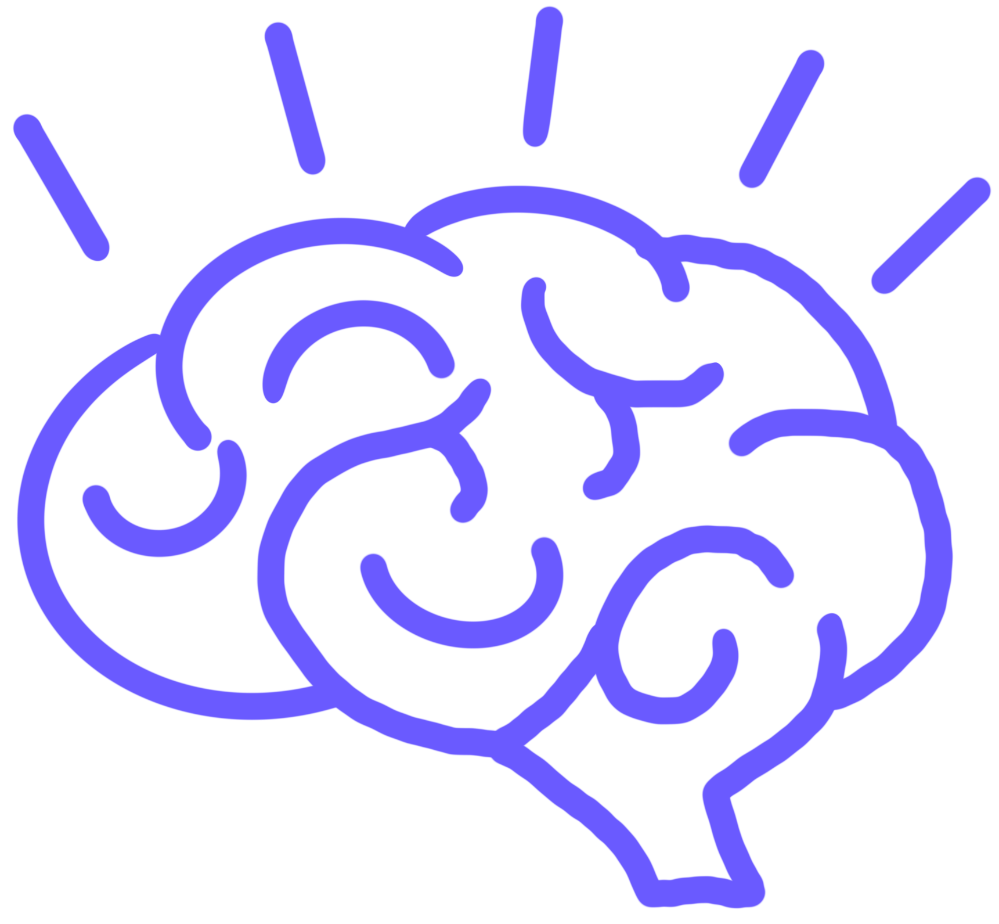
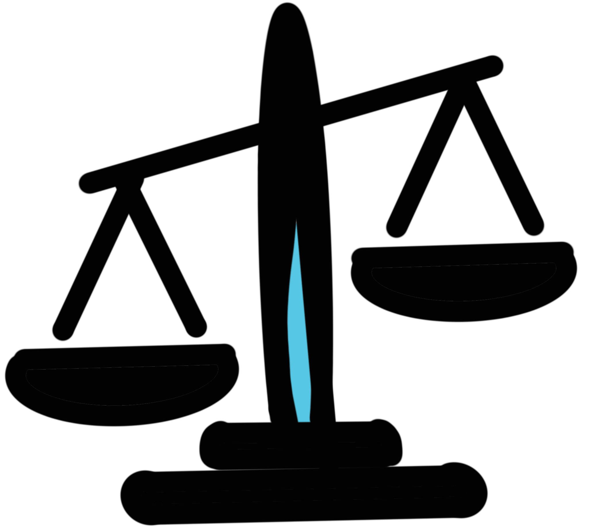

Consequences: Systemic Risk and Inhibited Innovation
Beyond individual privacy concerns, what are the larger negative impacts of surveillance capitalism on society, the artist, and the creative spirit?
Artistic Autonomy
Surveillance capitalism effects the ability of artists to create critical work, reach an audience, and maintain creative autonomy. These consequences stem from the monopolization of distribution channels, algorithmic conformity, and a profound shift in power dynamics.
Major tech platforms, motivated solely by profit, are now in control the conversation around art and culture, curating a specific viewing experience for the user based on whatever morals or ethics that company chooses to hold. Artists who wish to gain an audience are thus implicitly forced to "conform to the algorithms".

The Idea of Inevitability
Surveillance capitalism imposes a psychological burden on artists and the audience, discouraging critical engagement with the system itself. A major consequence is the psychological acceptance of the idea that the digital future is inevitable. This fatalistic attitude benefits tech companies because it discourages critical thinking and resistance.
If artists view themselves as "powerless data mines commodifying our lives," they will not create content that questions our dependence, questions our way of life and challenges authority.

Systemic Centralization of Power
Surveillance capitalism views the human experience as "free raw material for the taking", bypassing the artist’s individual rights or awareness and gaining control over how their creative existence is understood and profited from.
This system creates a "division of learning" where surveillance capitalists know everything about us (through predictive models and hidden data), but their operations are designed to be "unknowable and illegible" to the public, including artists.
This centralization of power means art's value becomes assessed through a narrow financial lens, not a cultural or critical one.
...
"Forget fighting the government, the real 21st century battle is going to be with ever invasive, and ever controlling, technology...Art is the only thing that can safeguard our soul."
- Kenneth Lipartito (2025)